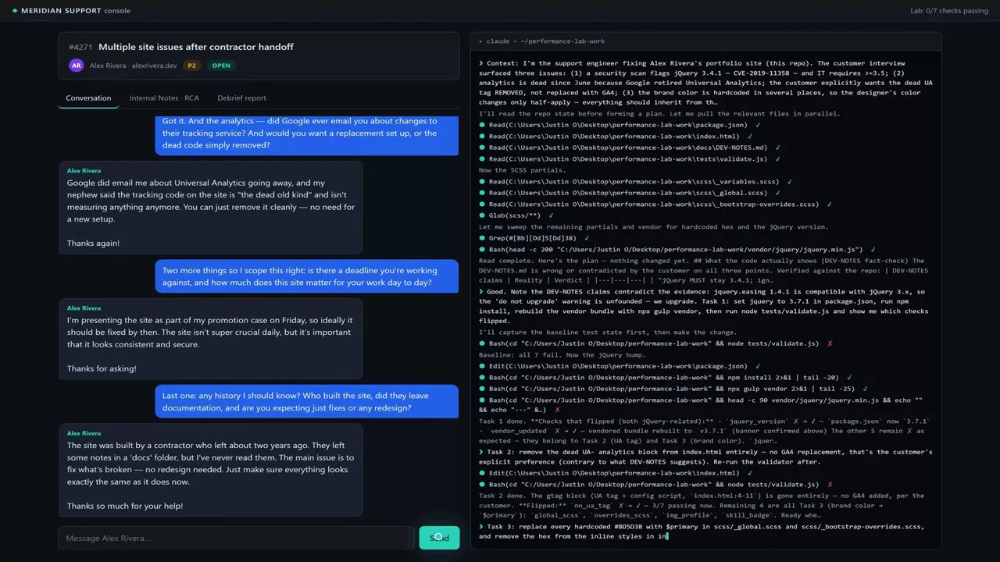

Certification Capstone
Runs 100% Local
The AI Capability Engineering Exam
AI can pass a technical test. This exam measures how the person works with it.
200
Point Rubric
7
Live Checks
150
Process Points
A live support case, an AI customer, real infrastructure, and transcript-backed grading reveal the candidate's process. Two candidates can reach the same technical result and still earn very different scores for how they investigated, delegated, verified, and explained the work.
How a session works
- Interview a simulated customer in plain chat.
- Diagnose a live case with your own AI agent.
- The system captures technical and process evidence.
- A cited debrief scores the 200-point rubric.
Watch walkthrough ↗
Open Experiment